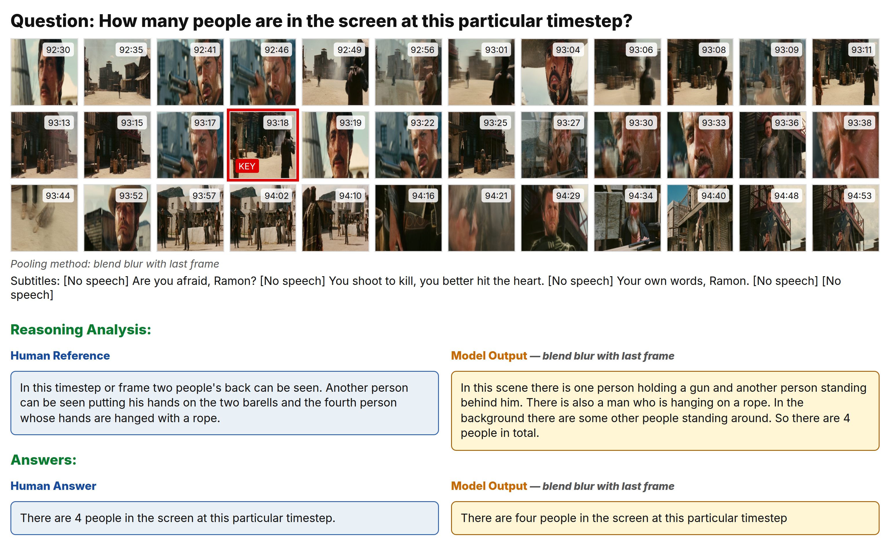
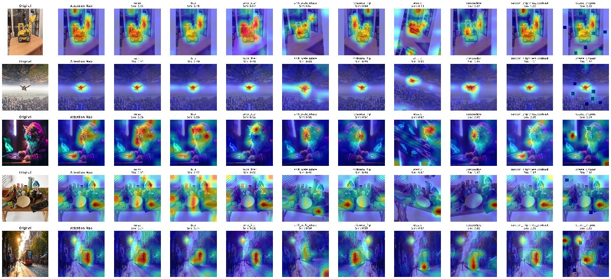
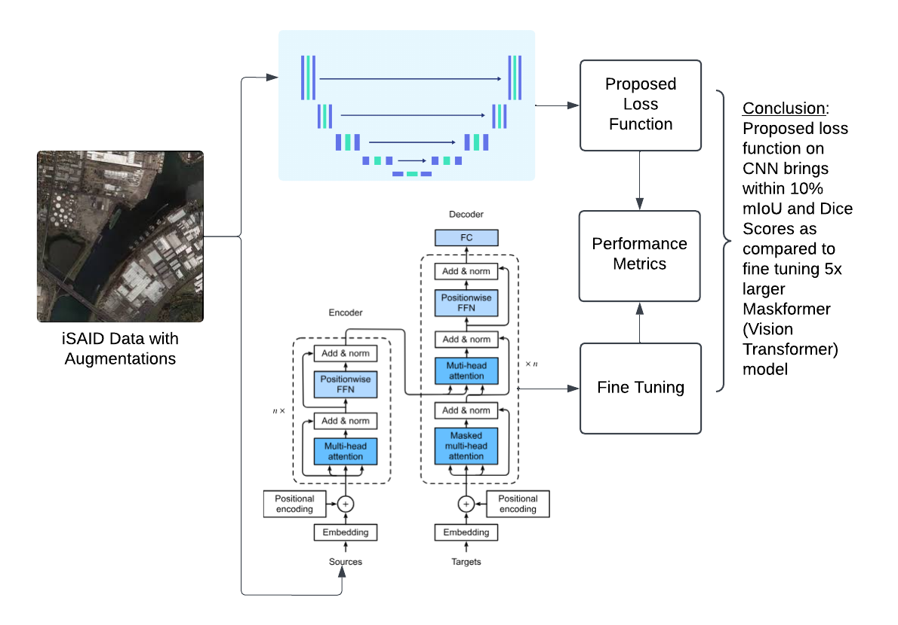
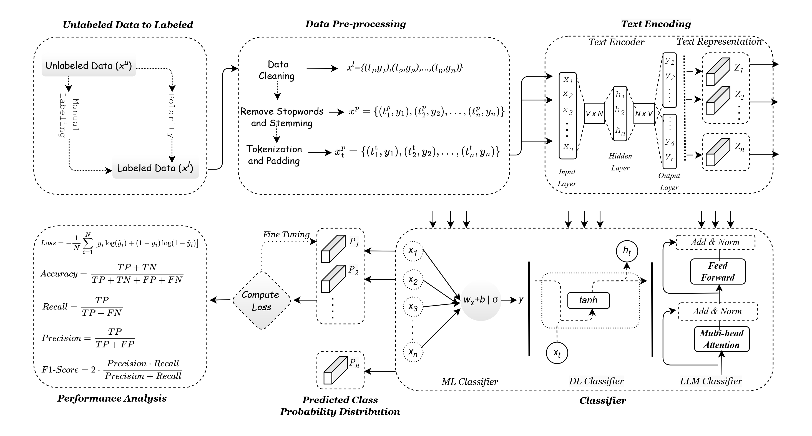
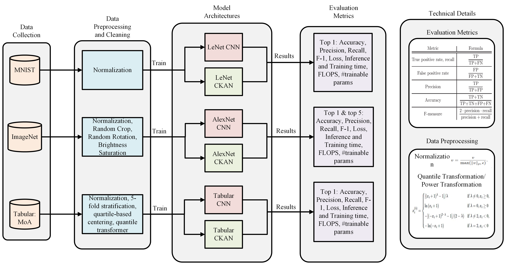
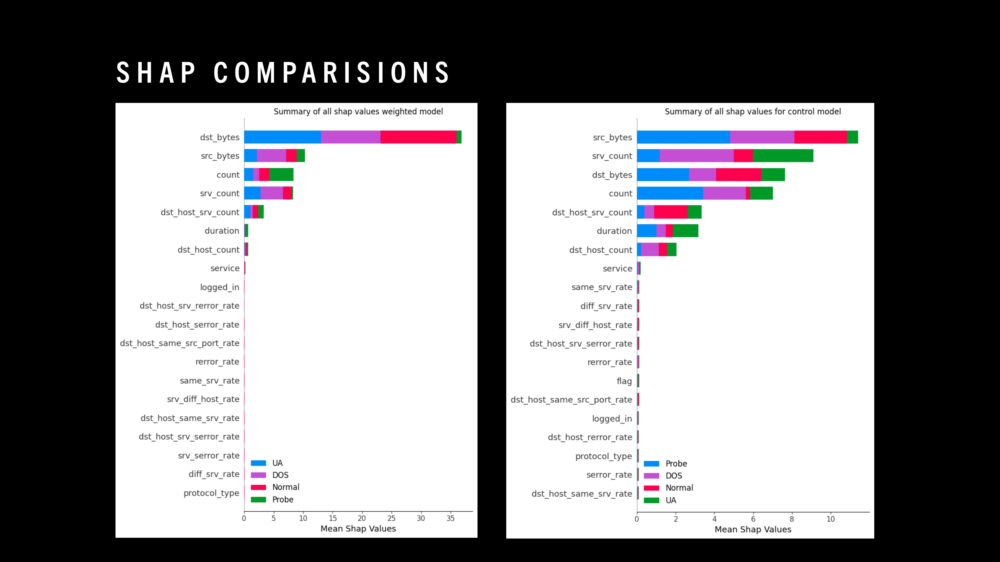
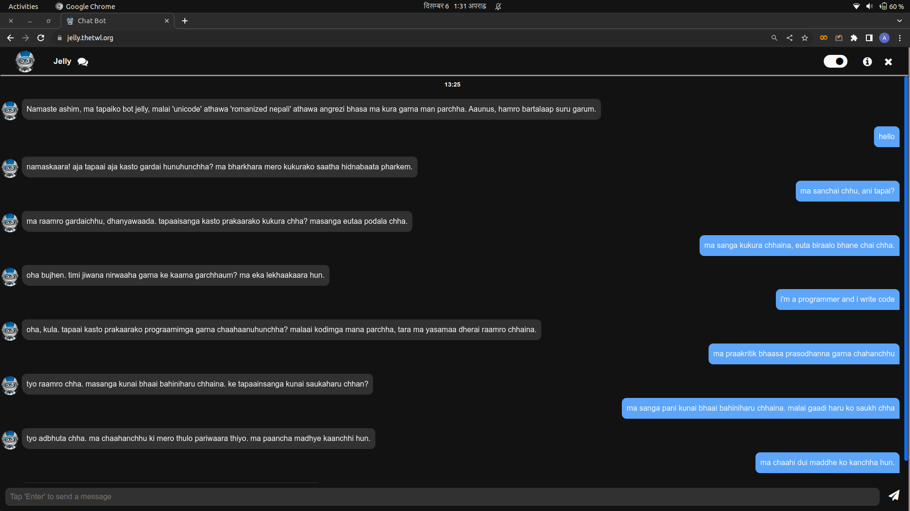
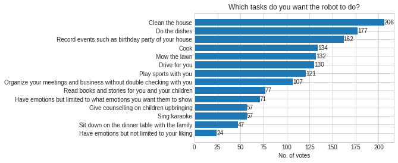

|
Ashim Dahal I'm an Undergraduate Research Assistant at The University of Southern Mississippi in Mississippi, USA where I work on the Cyber Innovations Lab mostly focusing on modern deep learning techniques on computer vision and multimodal systems. At the lab, I am advised by Dr. Nick Rahimi and closely work with him and his graduate and undergraduate students on topics like Stable Diffusion, Vision Transformers, Kolmogorov Arnold Networks, Cybersecurity, Visual Question Answering, NLP and Brain-Computer Interface. I was awarded $5500 summer research grant in 2025 by the Drapeau Center for Undergraduate Research (DCUR) for my research on Gaussian Splatting. I am also the Lead Organizer of the Google Developers Group (GDG) On Campus at USM where I also previously served as the Head of Artificial Intelligence at Google Developers Student Club at USM and represent the School of Computing Science and Computer Engineering's Ambassador as the Research Liason. Non-Tech Trivia: I play bansuri and read literature. I also won the Eagles Write Award (best assignment among all freshmen) 2023/4 for an essay I wrote in 45 minutes. |
{kind=link}
ResearchI'm interested in computer vision, deep learning, generative AI, and image processing. Most of my research is about understanding scene, analysing Deep Learning techniques, and inferring meaningful information by tinkering with model architectures and their loss function optimization. Some of my works in computer vision are highlighted. |
|  |
POVQA: Preference-Optimized Video Question Answering with Rationales for Data Efficiency
Ashim Dahal, Ankit Ghimire, Saydul Akbar Murad, Nick Rahimi arXiv, 2025 arXiv | <project page Making video question answering possible on large context scenes with minimal input tokens. |

|
Redemption Score: An Evaluation Framework to Rank Image Captions While Redeeming Image Semantics and Language Pragmatics
Ashim Dahal, Ankit Ghimire, Saydul Akbar Murad, Nick Rahimi arXiv, 2025 arXiv A robust framework to evaluate image-text pairs under perceptual, semantic, pragmatic and distributional alignment. |

|
EEG-to-Text Translation: A Model for Deciphering Human Brain Activity
Saydul Akbar Murad, Ashim Dahal, Nick Rahimi arXiv, 2025 arXiv We propose a new model, R1 Translator, which aims to improve the performance of EEG-to-text decoding. |
|  |
Embedding Shift Dissection on CLIP: Effects of Augmentations on VLM's Representation Learning
Ashim Dahal, Saydul Akbar Murad, Nick Rahimi MIV at CVPR (Proceedings Track), 2025 project page / arXiv How exactly does the representation on ViT model like CLIP change when we apply different levels and kinds of augmentations to them? This short paper explains this very question. |
|  |
Heuristical Comparison of Vision Transformers Against Convolutional Neural Networks for Semantic Segmentation on Remote Sensing Imagery
Ashim Dahal, Saydul Akbar Murad, Nick Rahimi IEEE Sensors Journal Impact Factor: 4.3, 2025 project page / arXiv Analysis of Vision Transformers (ViT) against Convolutional Neural Networks (UNet CNN) for image segmentation on Remote Sensing iSAID dataset. We propose a novel loss function that helps a smaller CNN model to perform equally to a 5x larger ViT model. |
|  |
Multi-Lingual Cyber Threat Detection in Tweets/X Using ML, DL, and LLM: A Comparative Analysis
Saydul Akbar Murad, Ashim Dahal, Nick Rahimi arXiv, 2025 project page / arXiv Threats over X are given on multiple languages. This paper proposes a new dataset and methodology to detect cyber threats spread over tweets on X. |
|  |
Efficiency Bottlenecks of Convolutional Kolmogorov-Arnold Networks: A Comprehensive Scrutiny with ImageNet, AlexNet, LeNet and Tabular Classification
Ashim Dahal, Saydul Akbar Murad, Nick Rahimi arXiv, 2025 project page / arXiv This paper analyzes Convolutional Kolmogorov Arnold Networks on ImageNet with Alexnet, MNIST with LeNet and Tabular CNN modification with MoA datasets. |
|

|
Analysis of Zero Day Attack Detection Using MLP and XAI
Ashim Dahal, Prabin Bajgai, Nick Rahimi International Conference on Security and Management, Las Vegas, 2024 project page / arXiv Analysing zero day cyber attacks with MLP and SHAP. We use weighted loss function that changes the focus of the model into different parameters while learning thus leading to a model that doesn't overfit on majority class. |
|

|
Effectiveness of Native Language for Conversational Bots
Ashim Dahal, Anuj Khadka, Bishal Kharal, Aashish Shah Europe PMC, 2022 project page / paper We created "Jelly" the first Romanized Nepali Chatbot using facebook's BlenderBot and conducted a survey analysing the efficacy of natural language for mental health conversational bots. |
|
|
Predicting Handwritten Devanagari Characters using modified-Lenet Model Architecture
Ashim Dahal, Sushan Kattel Research Square, 2022 paper We fine tuned a LeNet style CNN architecture to do OCR on handwritten Devanagari characters. These characters tend to be more complicated to understand than roman numerals and alphabets. |

|
Do you “Go big or go home” with Neural Networks?
Ashim Dahal Research Square, 2022 project page / paper Used TensorFlow's guide on a self curated chicken recipe dataset to then create a GRU based RNN model which would generate new recipes. Did ablation study on data preprocessing and noted down the effects of different processing techniques on the final generator. |
|

|
Would you own a ROBOT?: A detailed research on public response to the nooks and crannies of owning a robot.
Ashim Dahal The Ninth National Conference on Science and Technology, Lalitpur, Nepal, 2022 project page / paper Surveyed 300+ individuals regarding the various implications of living on a robot-centric economy. Questions cover topics including privacy, jobs, requirements and feature required for robots to be mainstream or house-help machines. |
Miscellaneous |
|
This website is adapted from: Jon Barron. |